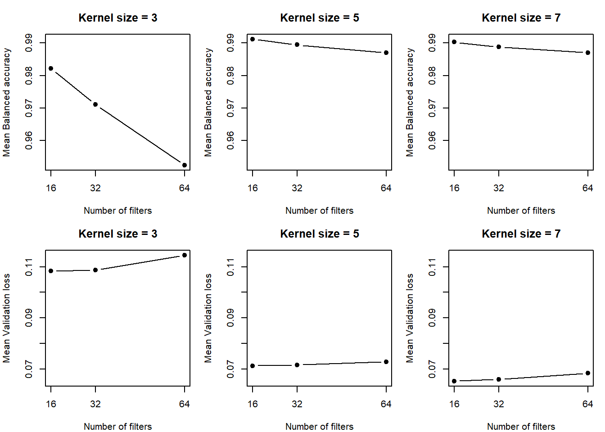
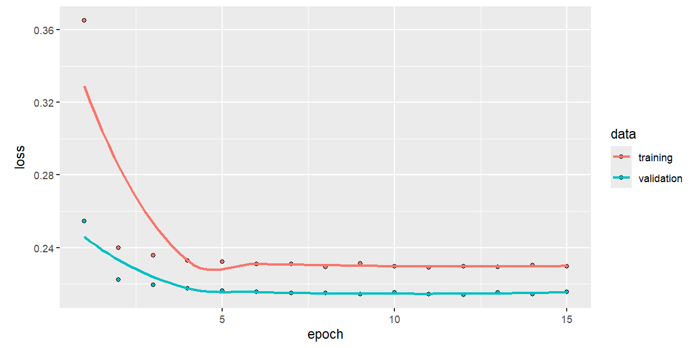

Siamese Neural Network
Data Science for Industry
1 Methods
A siamese neural network was implemented, with the aim of predicting if 2 images were written by the same person. The data set was initially split into its training (sessions 1 to 3), validation (session 4) and test (session 5) subsets. Within the training subset and validation subset, images were arranged into pairs. Each image could be part of more than 1 pair. Pairs had a 50% chance of both images having the same writer. To remove unnecessary complexity, all pairs were ensured to have 2 images portraying the same digit.
Contrastive loss was implemented, and is calculated as \[L = yD^2 + (1-y)\text{max}(0, m - D)^2,\] where y = 1 if the images are written by the same writer, D is the euclidean distance between the 2 image embeddings, and m = 1 is the margin. Balanced accuracy is calculated as the average of the true positive rate (sensitivity) and the true negative rate (specificity): \[\text{Balanced Accuracy} = \frac{\text{Sensitivity}+\text{Specificity}}{2}\] where \[\text{Sensitivity} = \frac{\text{True Positives}} {\text{True Positives}+\text{False Negatives}}\] and \[\text{Specificity} = \frac{\text{True Negatives}} {\text{True Negatives}+\text{False Positives}}.\] The distance threshold was chosen by maximizing balanced accuracy for that individual model. All the calculated distances were candidates for the threshold. Furthermore, hyperparameters were tuned and chosen according to which values and combinations thereof that produced the model with the highest balanced accuracy. For each combination of parameters considered, the model fitting process was repeated 3 times, and the average metrics were reported.
It was found that a model with 2 hidden layers (mean balanced accuracy = 0.966 and mean validation loss = 0.105) performed considerably better than a model with 1 (balanced accuracy = 0.773 and validation loss = 0.214). Thereafter, the activation functions on the hidden layers were optimized. The ReLU and Tanh functions were considered. The 4 different combinations of these functions across the 2 layer network were evaluated. Table 1 demonstrates that the best performing activation function combination was relu-tanh according to balanced accuracy (0.982). Though this does not correspond with the activation function combination chosen by validation loss (tanh-relu, 0.103), the balanced accuracy metric is prioritized throughout tuning. This is because balanced accuracy provides a direct measure of classification performance by averaging sensitivity and specificity. This ensures that performance on both classes (similar and dissimilar image pairs) is considered equally, regardless of class prevalence. In contrast, validation contrastive loss measures how effectively the network learns the distance relationships between image pairs, but does not directly indicate classification accuracy. Therefore, balanced accuracy was considered a more appropriate criterion for tuning the model.
| relu_relu | tanh_relu | relu_tanh | tanh_tanh | |
|---|---|---|---|---|
| Balanced accuracy | 0.966 | 0.971 | 0.982 | 0.980 |
| Validation loss | 0.105 | 0.103 | 0.108 | 0.113 |
Thereafter, the number of filters and their sizes were also tuned. Three numbers of filters were considered (16, 32 and 64) and 3 sizes of filters were considered (3x3, 5x5 and 7x7). Only square filters were considered for simplicity. The filter counts were as mentioned for the first hidden layer, and double thereof for the second hidden layer. Table 2 shows that all combinations of the filter numbers and sizes achieve a validation balanced accuracy above 95%.
The best-performing model (16 filters of size 5 x 5, with a balanced accuracy of 0.991) achieved the highest balanced accuracy, while the model with 16 filters of size 7 x 7 achieved the lowest validation loss (0.065). Although the model with 16 filters of size 7 x 7 has a marginally lower balanced accuracy (0.990), the difference is only 0.1%. Therefore, the choice between these models depends on whether classification performance or validation loss is prioritized. Since balanced accuracy is the primary metric throughout tuning, the model with 16 filters of size 5 x 5 is preferred, although the model with 16 filters of size 7 x 7 may also be considered given its lower validation loss.
In general, 64 filters of size 3 x 3 result in the worst-performing model, with the lowest balanced accuracy (0.952) and the highest validation loss (0.115). Filter size appears to matter more than filter count: across all three filter counts, the 3 x 3 filters consistently result in lower balanced accuracy than the 5 x 5 and 7 x 7 filters. This suggests that larger filters may capture more useful spatial patterns. As shown in Figure 1, the larger kernel sizes generally achieve lower validation loss and higher balanced accuracy. However, increasing the number of filters does not consistently improve performance; for a given kernel size, models with fewer filters generally perform better or comparably to those with more filters.
| n_filters | kernel_size | val_loss | balanced_accuracy |
|---|---|---|---|
| 16 | 3 | 0.108 | 0.982 |
| 32 | 3 | 0.109 | 0.971 |
| 64 | 3 | 0.115 | 0.952 |
| 16 | 5 | 0.071 | 0.991 |
| 32 | 5 | 0.072 | 0.989 |
| 64 | 5 | 0.073 | 0.987 |
| 16 | 7 | 0.065 | 0.990 |
| 32 | 7 | 0.066 | 0.989 |
| 64 | 7 | 0.068 | 0.987 |
Since validation balanced accuracy and error was already quite impressive, tuning of the other parameters (such as learning rate, dropout rate and the regularization parameter) was deemed unnecessary. The above (tuning) models used default values of 0.0001, 0.2 and 0.001 for the learning rate, dropout rate and the regularization parameter respectively. These inputs were retained. Hence, the final model used the above default values, one hidden layer with a relu activation and 16 filters of size 5x5, a tanh on the second hidden layer with 32 filters of size 5x5, and was trained using 6 epochs. The number of epochs decreased from 15 to 6 since values converge earlier on, rendering almost half of the epochs unnecessary (Figure 2).

The higher training loss visible in Figure 2 may partly be explained by regularization. Dropout (0.2) randomly disables units during training, making learning more difficult, whereas dropout is switched off during validation. L2 regularization (nu = 0.001) may also contribute to a higher training loss. However, the more likely possibility is that the validation data may be easier to predict than the training data due to differences in session composition. This is explained in the next paragraph. It is still important to note that a lower validation loss does not necessarily indicate a problem or data leakage.
To extensively evaluate the final model, a comprehensive test set was constructed, consisting of 1,000 image pairs for each of the following writer–session combinations: same writer–same session, same writer–different sessions, different writers–same session, and different writers–different sessions. Each of the 2 images in a pair contained the same digit, and the 5 digits featured amongst the thousand pairs in each category. Since only session 5 was held out for testing, pairs involving different sessions were constructed using images from sessions 1–4. Although the individual images in these pairs had been encountered during training, the specific combinations of images had not been seen by the model. The test pairs therefore still provided a valid assessment of the model’s ability to generalize to unseen pairwise comparisons, particularly its ability to distinguish between similar and dissimilar images under different writer–session conditions. However, this evaluation does not constitute a fully independent assessment of generalization to unseen images, since the images themselves were present in the training data. Consequently, the results should be interpreted as evidence of generalization to unseen image pairs rather than to entirely unseen data.
2 Results
The optimal distance threshold was found to be 0.247, meaning that 2 images with a difference less than 0.247 were classified as being written by the same person.
Table 3 shows the model performed very well on pairs from the same session, achieving a balanced accuracy of 94.7%. However, performance decreased substantially for pairs from different sessions, with a balanced accuracy of 55.4%. This difference was primarily driven by very low sensitivity (11.2%), indicating that the model struggled to correctly identify similar pairs across sessions. In contrast, specificity remained very high at 99.7%, suggesting that the model was effective at identifying dissimilar pairs regardless of session.
| session_type | n | accuracy | sensitivity | specificity | balanced_accuracy |
|---|---|---|---|---|---|
| Same session | 2000 | 0.947 | 0.899 | 0.995 | 0.947 |
| Different session | 2000 | 0.554 | 0.112 | 0.997 | 0.554 |
Table 4 displays the results segregated into writer-session combinations. Sensitivity, specificity and balanced accuracy could not all be calculated for each of the four writer–session combinations because the test pairs within each combination belonged exclusively to one true class. The same-writer combinations contained only pairs written by the same individual, whereas the different-writer combinations contained only pairs written by different individuals. Consequently, sensitivity could be calculated for the same-writer combinations, but specificity was undefined. Conversely, specificity could be calculated for the different-writer combinations, but sensitivity was undefined. Since balanced accuracy is the average of sensitivity and specificity, it could not be calculated for any individual writer–session combination. Accuracy was therefore used to compare classification performance across the four combinations, while sensitivity, specificity and balanced accuracy were calculated for the broader session-based groups, which contained both same-writer and different-writer pairs.
The model achieved very high accuracy for pairs of images from the same session, regardless of whether the images belonged to the same writer. Accuracy was 89.9% for the same-writer, same-session combination and 99.5% for different-writer, same-session pairs (see Figure in the Appendix) which shows an example of an incorrect prediction for different writer, same session). Similarly, different-writer pairs from different sessions achieved 99.7% accuracy. However, accuracy dropped to 11.2% for the same writer across different sessions. This suggests that variation in handwriting between sessions posed a substantial challenge, even when the writer’s identity remained unchanged. An example of an erroneous prediction can be seen in this Figure in the Appendix.
| pair_type | n | correct | accuracy |
|---|---|---|---|
| Same writer, same session | 1000 | 899 | 0.899 |
| Same writer, different session | 1000 | 112 | 0.112 |
| Different writer, same session | 1000 | 995 | 0.995 |
| Different writer, different session | 1000 | 997 | 0.997 |
The model’s performance was relatively consistent across the five digits (Table 5), with accuracy ranging from 74.2% to 76.5% and balanced accuracy from 73.8% to 76.3%. Digit 1 achieved the highest balanced accuracy (76.3%), while digit 3 achieved the lowest (73.8%). Specificity was consistently high (99.2%–100%), whereas sensitivity was lower (47.6%–53.2%). This indicates that the model was generally effective at identifying pairs written by different writers, but was less effective at recognizing pairs written by the same writer. The similar performance across digits suggests that no single digit substantially outperformed the others, although the low sensitivity across all five digits highlights the model’s difficulty in identifying the same writer, regardless of which digit was examined.
| digit | accuracy | sensitivity | specificity | balanced_accuracy |
|---|---|---|---|---|
| 0 | 0.742 | 0.501 | 0.995 | 0.748 |
| 1 | 0.765 | 0.532 | 0.995 | 0.763 |
| 2 | 0.763 | 0.513 | 0.998 | 0.755 |
| 3 | 0.742 | 0.476 | 1.000 | 0.738 |
| 4 | 0.743 | 0.510 | 0.992 | 0.751 |
Performance varied across writers (Table 6). Writer 18 achieved the highest accuracy (80.3%) and balanced accuracy (80.6%), followed by writer 7, with a balanced accuracy of 79.3%. In contrast, writer 13 had the lowest accuracy (69%) and balanced accuracy (69.7%), followed by writer 8 with a balanced accuracy of 71%. Specificity was generally high across writers (98.3% - 100%), whereas sensitivity was lower, ranging from 40.3% for writer 13 to 61.3% for writer 18. This suggests that the model was generally effective at identifying pairs written by different writers but struggled to identify pairs written by the same writer. Although performance differed between writers, the consistently low sensitivity suggests that this limitation affected writer identification broadly. Further investigation would be required to determine the reasons for the observed differences.
| writer | n | accuracy | sensitivity | specificity | balanced_accuracy |
|---|---|---|---|---|---|
| 1 | 212 | 0.769 | 0.538 | 0.991 | 0.765 |
| 2 | 177 | 0.718 | 0.432 | 1.000 | 0.716 |
| 3 | 218 | 0.752 | 0.481 | 1.000 | 0.740 |
| 4 | 216 | 0.750 | 0.518 | 1.000 | 0.759 |
| 5 | 168 | 0.732 | 0.476 | 0.988 | 0.732 |
| 6 | 210 | 0.710 | 0.444 | 0.990 | 0.717 |
| 7 | 182 | 0.791 | 0.587 | 1.000 | 0.793 |
| 8 | 216 | 0.718 | 0.429 | 0.991 | 0.710 |
| 9 | 187 | 0.775 | 0.523 | 1.000 | 0.761 |
| 10 | 198 | 0.783 | 0.557 | 1.000 | 0.778 |
| 11 | 204 | 0.750 | 0.495 | 1.000 | 0.748 |
| 12 | 197 | 0.751 | 0.520 | 1.000 | 0.760 |
| 13 | 232 | 0.690 | 0.403 | 0.991 | 0.697 |
| 14 | 249 | 0.711 | 0.453 | 0.983 | 0.718 |
| 15 | 186 | 0.747 | 0.484 | 1.000 | 0.742 |
| 16 | 170 | 0.782 | 0.543 | 1.000 | 0.772 |
| 17 | 161 | 0.758 | 0.542 | 0.987 | 0.765 |
| 18 | 218 | 0.803 | 0.613 | 1.000 | 0.806 |
| 19 | 212 | 0.778 | 0.557 | 1.000 | 0.778 |
| 20 | 187 | 0.770 | 0.552 | 1.000 | 0.776 |
Lastly, the AUC value was calculated to be 0.963, indicating that there is excellent discrimination between same-writer and different-writer pairs across all possible classification thresholds. However, the balanced accuracy of 0.554 (Table 3) for different-session pairs indicates poor classification performance at the selected threshold, particularly due to low sensitivity (0.112, Table 3). Overall, the high AUC alongside weak cross-session classification suggests that the model ranks pairs (by distance) well but struggles to correctly identify same-writer pairs across sessions at the chosen threshold.